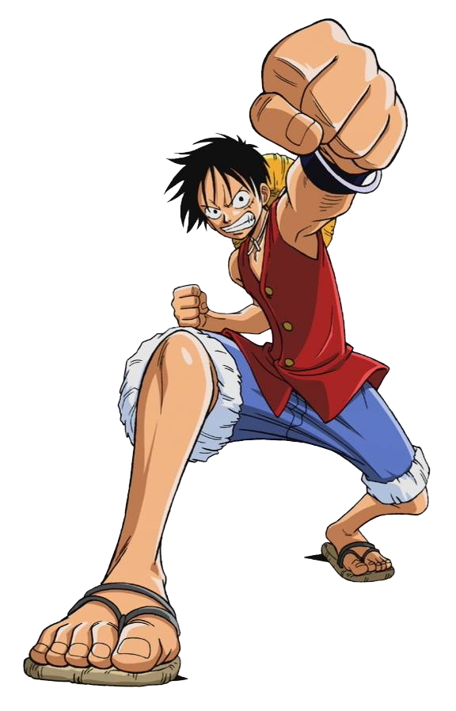
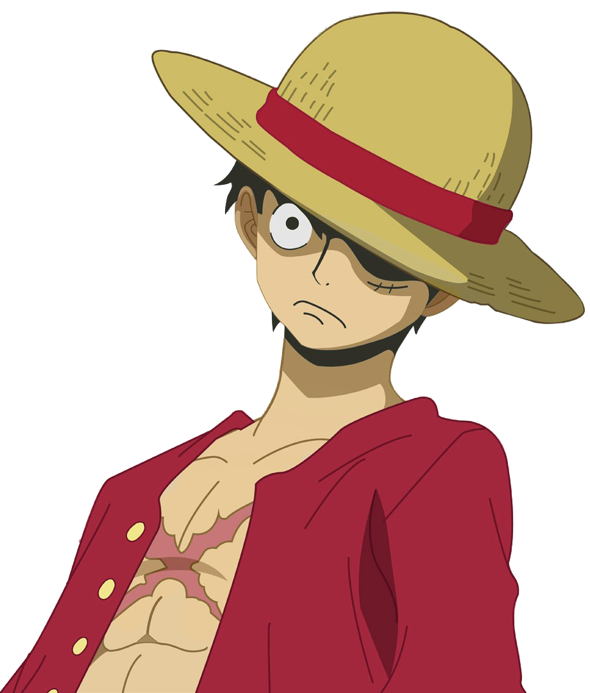
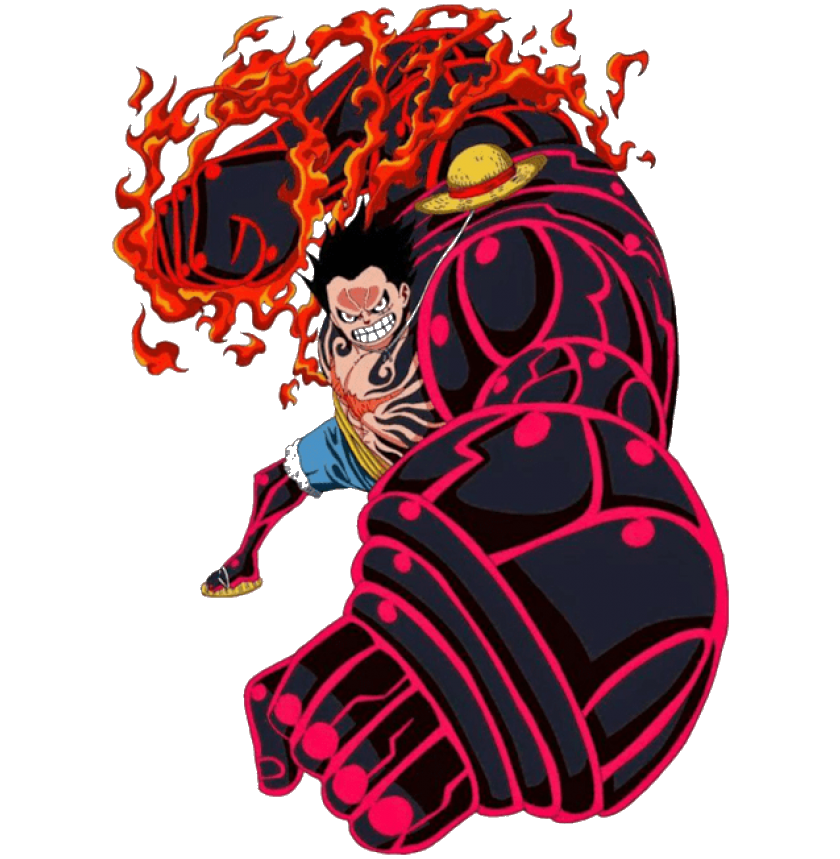

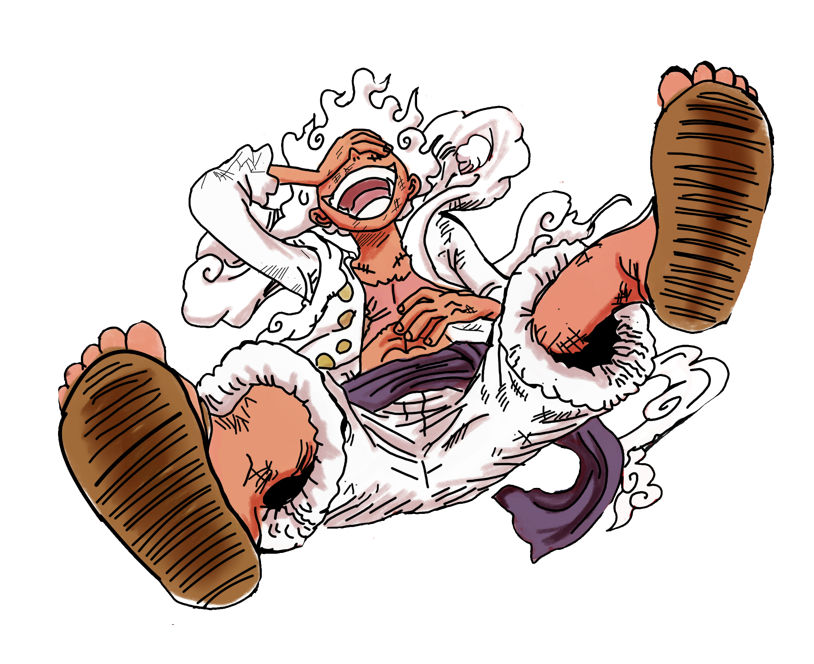
"얘들아, 출항이다!!"
몽키 D. 루피 — 원피스 ONE PIECE
FAMILY TRIP 2026
삿포로에서 후쿠오카까지.
우리 가족이 함께하는 14일간의 여정.
2026. 4. 27 — 5. 10
OUR ROUTE
인천에서 출발, 일본 열도를 종단합니다.




"얘들아, 출항이다!!"
몽키 D. 루피 — 원피스 ONE PIECE
Day 1-3 · 4/27 — 29
홋카이도의 수도.
눈과 맥주와 라멘의 도시.
인천공항에서 삿포로 신치토세 공항행 직항 탑승 (약 3시간)
입국 수속 후 JR 쾌속 에어포트로 삿포로역 이동 (약 40분). 호텔에 짐 보관
삿포로 시민의 부엌! ①하나마루스시(회전초밥) ②기타노구루메테이(해산물 덮밥) ③오이소(해산물 이자카야) 중 택
삿포로의 상징, 1878년 지어진 시계탑. 도보 10분 거리에 구 홋카이도청 붉은 벽돌도 함께
1.5km 녹지 공원 산책 후 인기 빵집 동구리에서 치쿠와빵, 카레빵 간식
은행나무 가로수길이 아름다운 캠퍼스 산책. 홋카이도산 우유 라떼로 유명한 바리스타트 커피에서 휴식
면세 쇼핑! 과자, 화장품, 의약품 등. 삿포로역 근처 메가돈키는 4층 규모
홋카이도 명물 징기스칸! 부드러운 양고기를 돔형 철판에 구워먹는 히라쓰카 본점
JR 삿포로역에서 오타루까지 약 30분. 해안선 차창 풍경이 아름답습니다
바다를 끼고 자리한 수족관. 펭귄 행진, 돌고래 쇼 등 아이들이 좋아하는 체험이 가득!
오타루 현지인이 추천하는 초밥집. 신선한 홋카이도 네타를 합리적인 가격에!
메르헨 교차로의 오르골당. 3,000개 이상의 오르골이 울려퍼지는 공간
오타루 명물 르타오 더블 프로마주 치즈케이크! 본점 한정 메뉴와 2층 카페 전망
JR로 삿포로역 복귀 (30분)
삿포로 미소 라멘의 전설! 미소노역 근처, 줄이 있지만 회전이 빠릅니다
따뜻한 일본 가정식 레스토랑. 정갈한 정식 메뉴가 아이들 입맛에도 잘 맞아요
삿포로 인기 디저트 카페. 야식 겸 달콤한 마무리! 푹신한 샌드위치가 시그니처
코카콜라 제조 과정 견학! 아이들 체험학습에 최고. 기념 콜라 시음 & 한정 굿즈
붉은 벽돌 건물의 삿포로 맥주 역사 견학. 비어 가든에서 한정 맥주 시음
매일 아침 직접 뽑는 수타 소바 전문점. 고소한 메밀향과 투명한 국물이 일품!
수타 우동 전문점. 소바 vs 우동 취향따라 한 곳 선택 or 둘 다!
홋카이도 명물 스프카레! 큰 야채가 통으로 들어간 시그니처. 매운맛 조절 가능
JR 쾌속 에어포트로 신치토세 공항 이동 (약 40분)
공항 필수 코스! 홋카이도 우유로 만든 극강의 소프트크림
신치토세 공항에서 하네다 공항행 국내선 탑승 (약 1시간 40분)
홋카이도는 4월 말에도 10~15°C. 겉옷 필수! 삿포로 지하철 1일권(830엔)이면 시내 이동 편리. 코카콜라 공장은 사전 예약 필요. 멘야사이미는 15~16시가 대기 가장 짧습니다.
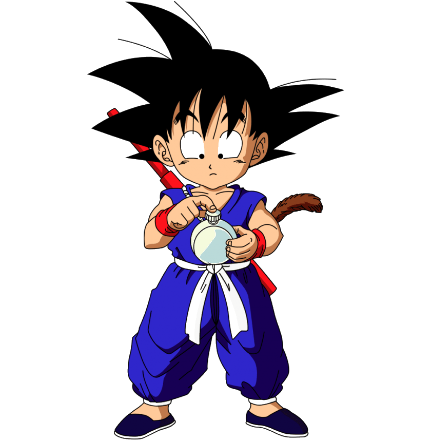
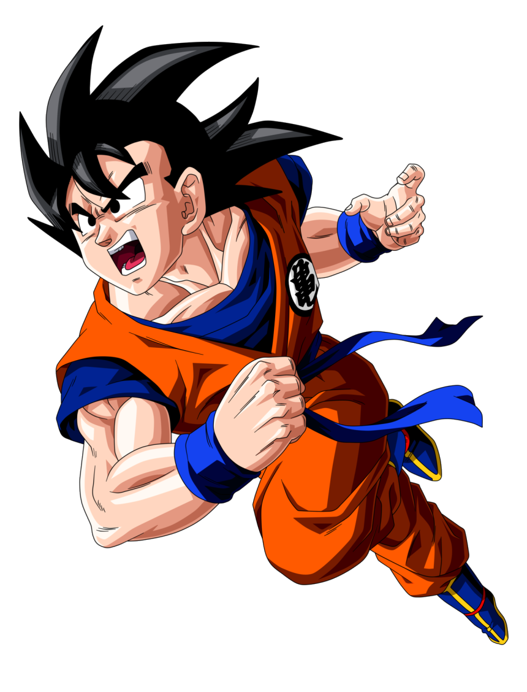
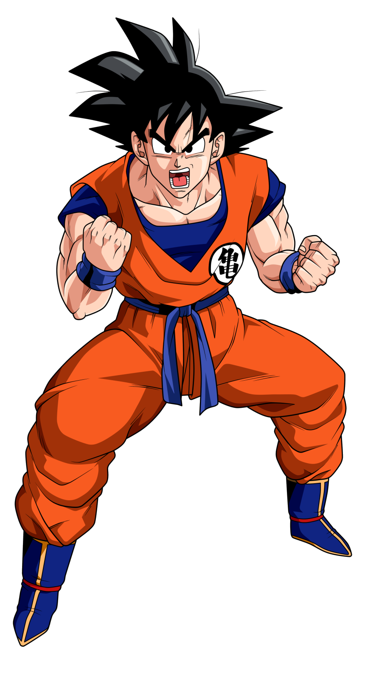
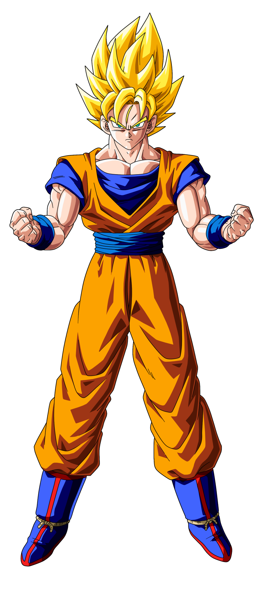
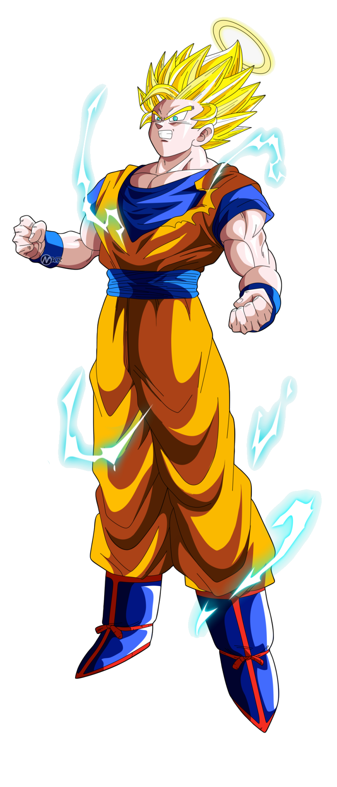
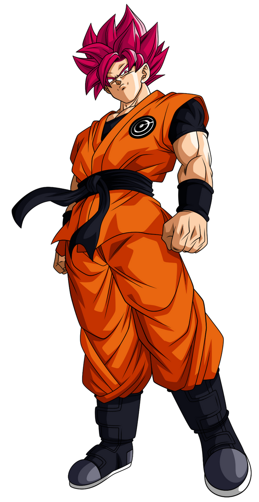
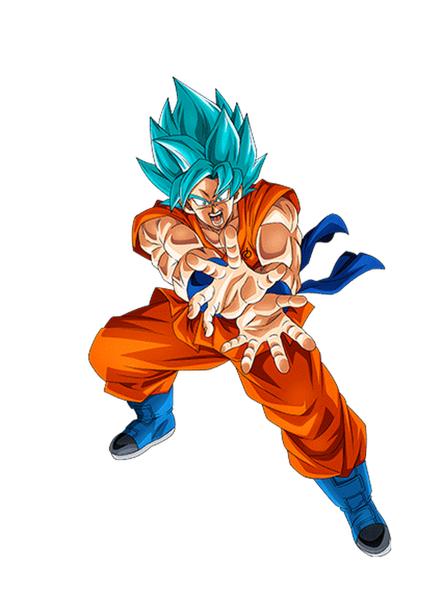
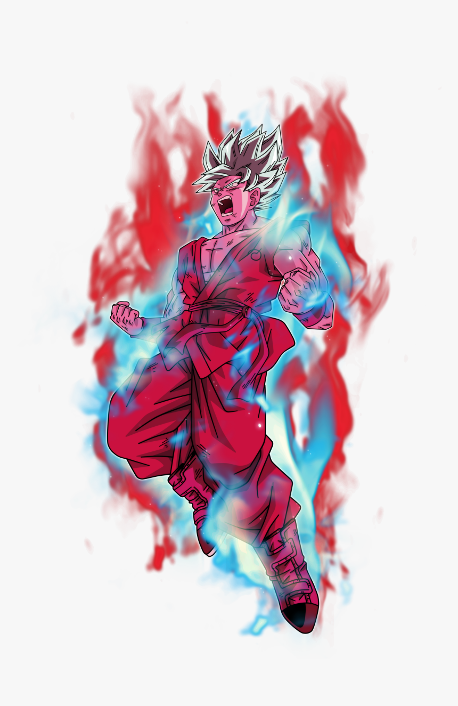

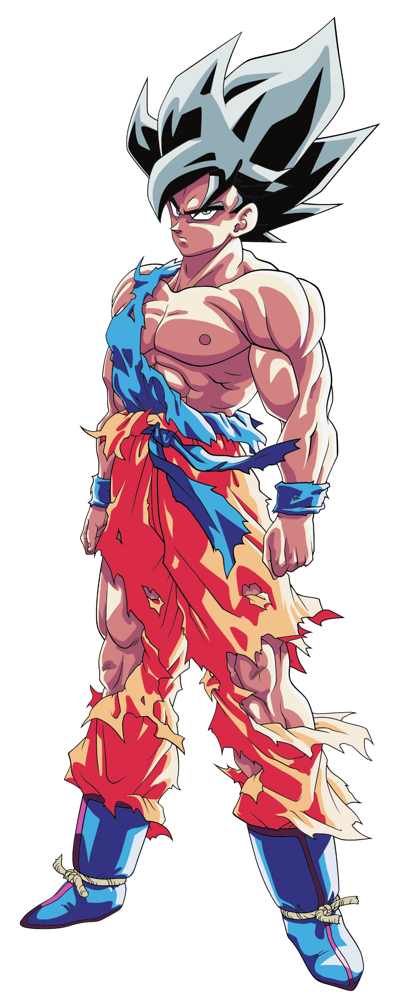
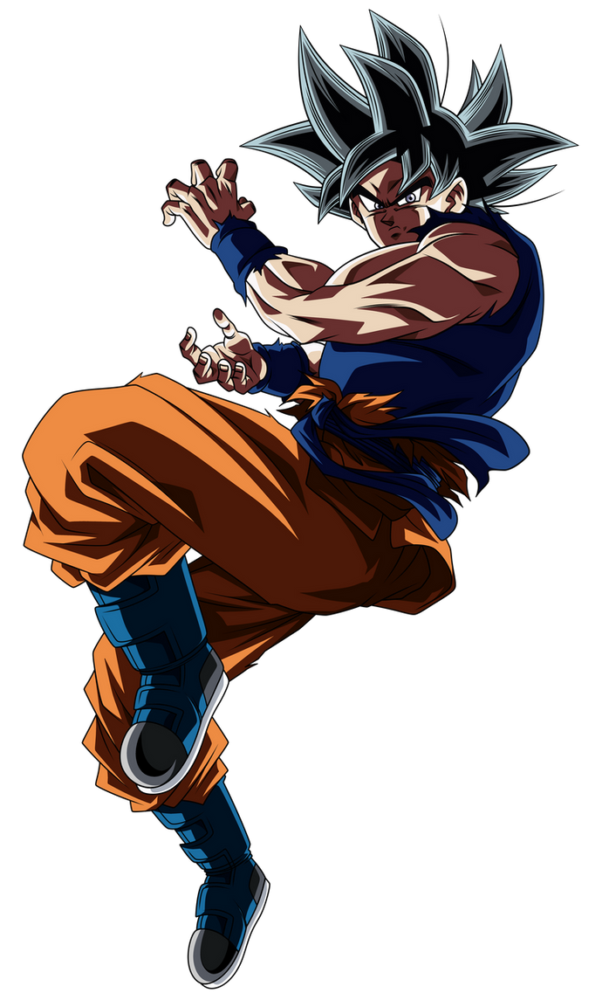
"한계를 넘어서는 것.
그게 수행이다."
손오공 — 드래곤볼 ドラゴンボール
Day 4-7 · 4/30 — 5/3
전통과 초현대가 공존하는
세계 최대의 메트로폴리스.
도쿄에서 가장 오래된 사원. 카미나리몬(번개문)과 나카미세 상점가에서 전통 간식 맛보기
우에노 공원 산책 후, 활기 넘치는 아메요코 시장에서 길거리 음식 즐기기
전자제품, 애니메이션, 피규어의 성지. 가족 중 덕후가 있다면 필수 코스!
높이 634m의 세계 최고 전파탑. 전망대에서 석양이 물드는 도쿄 시내 파노라마 감상
신선한 해산물 덮밥과 다마고야키(계란말이). 활기 넘치는 시장 분위기를 즐기세요
도심 속 울창한 숲에 자리한 메이지 신궁. 엄숙한 분위기 속 참배 체험
일본 스트릿 패션의 중심지. 크레페, 솜사탕 등 인스타그래머블한 간식들
세계에서 가장 유명한 교차로. 시부야 스카이 전망대에서 내려다보는 것을 추천!
도쿄의 샹젤리제. 건축 명소와 고급 브랜드 매장이 즐비한 세련된 거리
네온사인 빛나는 가부키초 산책 후, 추억의 골목길 오모이데 요코초에서 야키토리 저녁
몰입형 디지털 아트 체험. 가족 모두가 즐길 수 있는 환상적인 공간. 사전 예약 필수!
실물 크기 건담 유니콘 앞에서 기념촬영 후, 푸드코트에서 점심
도쿄 최고의 쇼핑 거리. 유니클로 긴자점, 이토야 문구점, 돈키호테 등
도쿄의 클래식 랜드마크. 조명이 켜진 야경이 특히 아름다운 도쿄타워 전망대
JR 요코스카선으로 도쿄역에서 가마쿠라까지 약 1시간
높이 13m의 청동 아미타불 대불상. 가마쿠라의 상징이자 일본 3대 대불 중 하나
수국과 바다 전망이 아름다운 하세데라, 가마쿠라 역사의 중심 하치만구 참배
가마쿠라역 앞 코마치도리 상점가에서 시라스동(멸치 덮밥)과 말차 디저트
바다를 달리는 에노덴 열차 탑승. 에노시마 해변에서 슬램덩크 건널목 성지순례!
도쿄역에서 신칸센 노조미로 교토역까지 (약 2시간 15분), JR 나라선으로 나라 이동
도쿄 메트로 72시간 패스(1,500엔)로 지하철 무제한 이용! 팀랩은 반드시 사전 예약. GW(골든위크) 연휴 기간이라 인파에 유의!
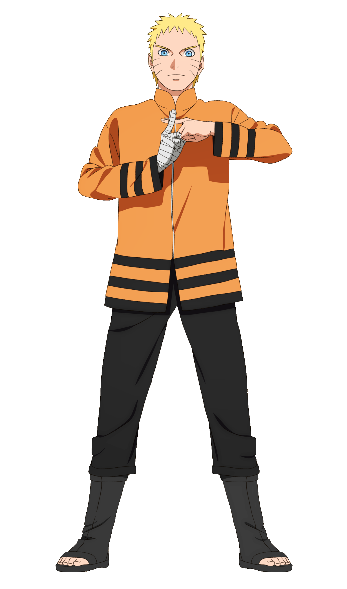
"포기하지 않는 것.
그게 내 닌자도야."
우즈마키 나루토 — 나루토 NARUTO
긴 여정도 포기하지 않고 끝까지!
Day 8-9 · 5/4 — 5
천년 고도.
사슴과 대불이 반겨주는 평화로운 도시.
약 1,200마리의 야생 사슴이 자유롭게 돌아다니는 공원. 센베이로 먹이주기 체험!
세계 최대 목조 건물에 안치된 높이 15m의 나라 대불. 기둥 구멍 통과 도전!
전통 마을 나라마치에서 가마메시(솥밥)나 카키노하즈시(감잎 초밥) 맛보기
3,000개의 석등과 매달린 등롱이 신비로운 분위기를 자아내는 세계유산 신사
메이지 시대에 만들어진 아름다운 일본 정원. 도다이지 지붕을 배경으로 한 절경
긴테쓰나라역 앞 아케이드 상점가에서 저녁 식사 후 야경 산책
세계 최고(最古)의 목조 건축물. 일본 최초의 유네스코 세계유산
나라 니시노쿄 지역의 두 세계유산 사찰. 한적하고 아름다운 절경
나라 중심부 모치이도노 상점가에서 우동이나 카레 점심. 나라 특산 미야게 쇼핑
무료 입장 가능한 요시키엔 일본정원. 시간 여유가 있으면 나라 국립박물관도 추천
긴테쓰 나라선으로 교토까지 약 45분 이동. 교토역 주변 호텔 체크인
사슴에게 센베이를 한 번에 다 보여주지 마세요! 달려듭니다. 나라는 도보로 충분히 관광 가능. 5월 초는 최적의 관광 시즌!
"강해져라.
그래야 소중한 것을
지킬 수 있다."
미야모토 무사시 — 베가본드 バガボンド
교토, 사무라이 정신의 고향으로
Day 10-12 · 5/6 — 8
천년의 수도.
일본 전통 문화의 정수를 만나다.
천 개의 붉은 도리이가 터널을 이루는 장관! 이른 아침에 방문해야 한적하게 즐길 수 있어요
교토 최고의 명소. 13m 높이의 무대에서 내려다보는 교토 시내 전경이 압권
돌계단 골목의 전통 가옥 거리. 유바(두부 껍질) 요리나 말차 디저트로 점심
전통 마치야(町家) 건물과 게이샤를 만날 수 있는 하나미코지 거리
'교토의 부엌'이라 불리는 400년 역사의 시장. 말차 아이스크림 등 시식 천국
가모가와 강변의 노려카(川床) 레스토랑에서 교토 가이세키 요리 즐기기
하늘 높이 솟은 대나무가 만들어내는 신비로운 터널. 아침 일찍이 포인트
산 정상에서 야생 원숭이와 교토 시내 전경을 동시에 즐기는 특별한 경험
도게츠교 근처에서 교토식 두부 요리(유도후)나 소바 맛보기
황금빛으로 빛나는 금각사와 거울 연못의 완벽한 반영. 교토의 아이콘
교토 전통 찻집에서 말차와 와가시(일본 전통 과자) 체험. 다도 문화 배우기
교토역 빌딩의 공중정원에서 야경 감상 후, 라멘 코지에서 교토식 돈코츠 라멘
JR 나라선으로 교토역에서 약 20분. 일본 말차의 본고장 우지 도착
10엔 동전에 그려진 봉황당이 있는 세계유산. 극락정토를 재현한 아름다운 정원
말차 소바, 말차 파르페, 말차 아이스크림... 나카무라 토키치 본점 필수
도쿠가와 이에야스가 지은 니조성. '나이팅게일 마루'(울음소리 나는 복도)가 인상적
은각사에서 난젠지까지 이어지는 2km의 운치 있는 산책로
온 가족이 기모노를 입고 교토 거리에서 기념 촬영. 2~3시간 대여가 일반적
폰토초 골목의 분위기 있는 이자카야에서 교토의 마지막 밤을 즐기기
교토 버스 1일권(700엔)이면 시내 대부분 커버. 후시미 이나리와 대나무숲은 이른 아침 강추! 기모노 대여는 사전 예약하면 할인. 우지는 교토 근교 필수 코스!
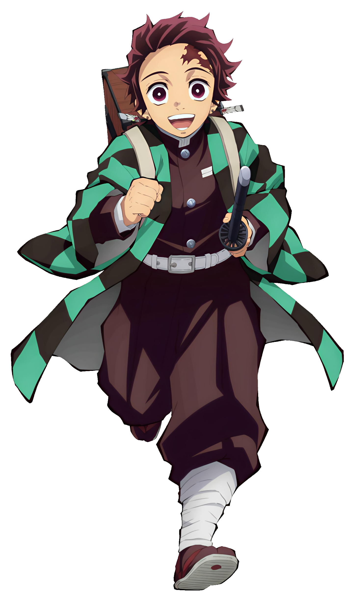
"흐르는 물처럼,
어떤 형태에도
맞출 수 있게."
카마도 탄지로 — 귀멸의 칼날 鬼滅の刃
여행의 마지막까지 유연하게!
Day 13-14 · 5/9 — 10
일본 최고의 먹거리 도시.
야타이 포장마차의 고향.
교토역에서 신칸센 노조미로 하카타역까지 약 2시간 40분
이치란 라멘 본점 또는 신신라멘에서 정통 하카타 돈코츠 라멘. 카에다마(면 추가) 필수!
운하가 흐르는 대형 복합 쇼핑몰. 분수 쇼와 다양한 브랜드 매장
후쿠오카 시민의 휴식처. 호수 주변 산책과 일본정원 방문
후쿠오카의 상징! 나카스 강변의 포장마차에서 라멘, 꼬치구이, 교자를 즐기는 특별한 저녁
학문의 신 스가와라 미치자네를 모신 신사. 참배길의 스타벅스 컨셉매장도 필수!
다자이후 텐만구 옆에 위치한 국립박물관. 규슈의 아시아 교류 역사를 한눈에
우메가에모치(매실떡) 필수! 참배길에서 맛볼 수 있는 다양한 일본 간식들
하카타역 빌딩과 텐진 지하상가에서 마지막 기념품 쇼핑
후쿠오카 공항에서 인천/김포행 탑승. 공항은 시내에서 지하철 5분!
후쿠오카 공항은 시내에서 지하철 5분이라 마지막 날까지 알차게! 야타이는 18시 이후 오픈. 다자이후는 니시테쓰 전철로 약 40분.
PACKING LIST
구성원별로 체크하며 준비하세요. 자동 저장됩니다.
BUDGET
가족 4인 기준 · 넉넉하게 산정
약 1,200만원
현지 746만 + 별도 440만
로딩 중...
숙소는 Airbnb/패밀리룸이면 호텔보다 30% 절약. 편의점 아침(4인 1만원 이내) + 점심 맛집 + 저녁 레스토랑 조합 추천. 돈키호테 면세(5,000엔↑), JR패스는 출발 전 온라인 구매가 저렴.
EMERGENCY
만약을 위해 저장해두세요.
경찰: 110
소방/구급: 119
📞 +81-3-3452-7611
영사콜센터: +82-2-3210-0404
보험사: ___________
증권번호: ___________
긴급연락: ___________
삿포로: ___________
도쿄: ___________
나라: ___________
교토: ___________
후쿠오카: ___________
국가번호: +81
시차: 없음
전압: 100V (돼지코 필요)
Google Maps — 길찾기
Papago — 번역
Suica — 교통카드
FAMILY TALK
여행 일정에 대한 의견을 자유롭게 남겨주세요.